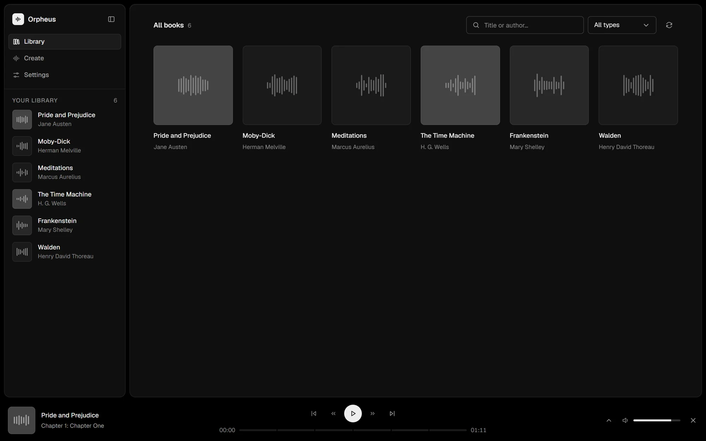
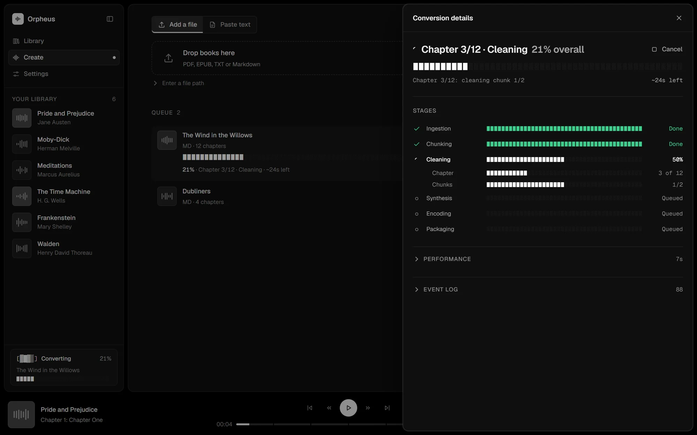

Orpheus turns a book into an audiobook on your own computer. You hand it a PDF, EPUB, Markdown or text file and get an .m4b back in your library, and nothing gets uploaded along the way. The interface is Tauri and React, while the real work happens in a Python engine that runs in the background.

The hard part
Most of the trouble is in the text itself. A PDF is full of page numbers, footnotes and words broken across two lines, and a speech model will happily read every one of them out loud, so each chapter goes through a cleaning step before anything gets spoken.
Then there's time. Synthesis keeps the GPU busy for a long while, and a crash two hours in shouldn't cost you the whole book, which is why every chapter is tracked separately and saved the moment it finishes. If something does fail, you lose that one chapter and keep the rest.
Cleaning also runs a chapter ahead of speech so the GPU isn't left waiting for text, and the speech model (Kokoro) loads once per book instead of once per chunk.

Laptops and GPU machines
I wanted it to run on a MacBook as well as on a desktop with an NVIDIA card, so the engine comes in three builds: one with no local models, one using MLX on Apple Silicon and one for CUDA. Each build has a fixed list of dependencies that gets checked before a release.
Because the engine is a small local web server, any program on the computer could in principle talk to it. To prevent that, the app hands it a session token at startup that every request has to carry, and the API only accepts calls coming from the app's own window.
Testing
There are a little over 1,400 tests. The quick ones run in CI on macOS and Windows, the ones that need a real GPU are opt-in, and every build gets a fresh install test before a release. When a machine doesn't have the right hardware those tests show up as skipped rather than passed.
Next I'd like to add more voices and have the player remember where you stopped listening, and chapter navigation in the player could be a lot better too.